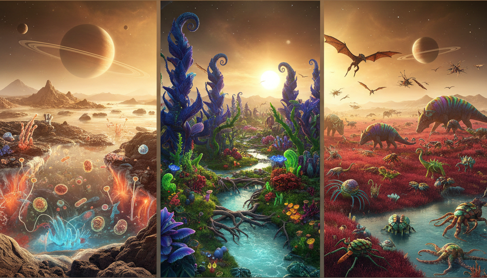
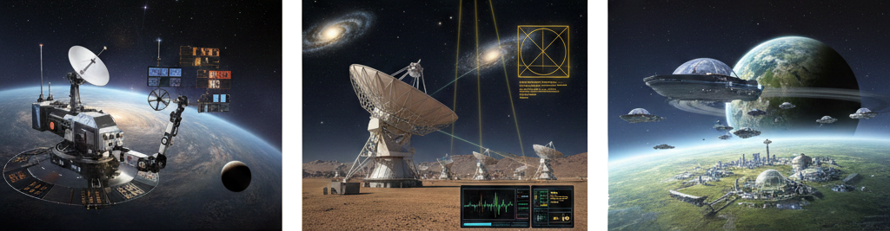

▼目次
微生物発生は、細胞膜の形成と自己複製系の確立に集約される。地球外環境においてたとえば液体メタンやアンモニアなど水以外の溶媒を想定した場合でも、境界膜による「自己と外界の分離」は、エントロピー増大を阻むための絶対条件である。
微生物レベルの発生において、ハルシネーション（科学的根拠を欠く空想）を排して考察すれば、以下の2点が普遍的な制約となる。
1. 代謝ネットワークのトポロジー：化学的勾配を利用したエネルギー代謝において、酵素（あるいはそれに準ずる触媒）の発生的獲得は、反応経路の閉鎖性を要求する。
2. 情報高分子の区画化：核酸に類する情報分子が次世代に継承される際、単なる複製ではなく膜の伸長と分裂を伴う構造の発生が必要となる。
低重力環境下の惑星においては、微生物のサイズ制約が地球よりも緩和される可能性がある一方でブラウン運動による物質拡散の効率がボトルネックとなり、微生物発生の形態学的な多様性は依然として細胞表面積と体積の比率（S/V比）に支配されると考えられる。
多細胞生物、特に移動能力を有する「動物型」の生命体を想定する場合、発生プロセスは運動エネルギーの効率化という物理的要請を強く受ける。地球上の動物発生における基本原理である「軸形成（前後・背腹軸）」「体節制」は、収斂進化の結果として地球外生命においても高い確率で再現される可能性が高い。
地球の動物発生を司るホメオボックス（Hox）遺伝子群のような、空間的な位置情報を規定する「形態形成場」の概念は、三次元空間で複雑な体制を構築する上で不可欠である。地球外生命が炭素を骨格としないあるいはDNAとは異なる遺伝暗号を有していたとしても、発生過程において細胞集団が位置情報を共有する「バイオ電気信号」や「化学濃度勾配」は、制御理論的に見て必須のモジュールといえる。
強重力下における動物発生では、骨格系（あるいは外骨格系）の形成が初期段階から優先され、神経系の発生は物理的な防護を前提として進む。逆に弱重力下では、浮力を利用した放射相称的な発生形態が卓越する可能性がある。かたや捕食・被食関係という生態学的動圧が存在する限り、感覚器の頭部集中化（頭化）を伴う動物発生は、情報の処理速度と反応速度を最適化するための普遍的な解となる。
光合成あるいはそれに類する外部エネルギー吸収に特化した「植物型」生命体において、その植物発生は、受容面積の最大化と支持構造の維持という矛盾する二要素の最適化プロセスとなる。
地球上の植物は、頂端分生組織（SAM）による無限成長能を特徴とする。地球外における植物発生においても移動を行わない生存戦略をとる場合、環境の不均一性（光の方向、栄養塩の分布）に適応するための「モジュール型成長」は極めて合理的である。

恒星のスペクトルが地球（G型主系列星）と異なる場合、例えば赤外線が支配的なM型赤色矮星の惑星では、植物発生における光受容体の感受域は大きく変化する。葉緑素（クロロフィル）に代わるより長波長に適応した色素系が発生段階でプログラムされる必要がある。また大気が希薄な惑星における植物発生では、クチクラ層の極端な発達や放射線防護のためのケイ酸塩の蓄積など、細胞壁の発生学的な強化が観察されると推測される。
地球外生物の発生を規定する主要な物理定数について、以下の表にまとめる。
| 環境要因 | 微生物発生への影響 | 動物発生への影響 | 植物発生への影響 |
|---|---|---|---|
| 重力加速度 (g) | 細胞内小器官の沈降速度 | 骨格・筋系の質量比率 | 導管内の水分輸送限界、最大樹高 |
| 大気圧/密度 | 膜透過性と浸透圧調節 | 飛行能力の獲得閾値 | 蒸散効率とガス交換形態 |
| 恒星放射スペクトル | 活性酸素種に対する修復能 | 視覚器の発生学的検知帯 | 光合成色素の生合成経路 |
| 磁場強度 | 荷電粒子による変異率制御 | 磁気受容による渡り行動の発生 | 細胞分裂の配向制御（推測） |
これまでの発生考察は、あくまで熱力学第二法則および液相を介した生化学反応という制約下に基づいている。SFで描かれるような「プラズマ生命体」や「暗黒物質生命体」については、現在の分子生物学および発生学的知見を適用するには未だ物理学的な理論基盤が脆弱なため射程外とする。
微生物発生／動物発生／植物発生のいずれにおいても生命が「散逸構造」として持続するためには、情報の自己複製（Genotype）と形態の構築（Phenotype）の間にフィードバック制御を伴う発生プロセスが介在しなければならない。「情報の具現化」の論理は、宇宙における生命の普遍性と特殊性を分かつ境界線となる。
生命の起源を論じる際、地球の深海熱水噴出孔や地表の温泉地帯をモデルとした「RNAワールド仮説」が有力視されている。生命の誕生には「自由エネルギーの勾配」と「情報の濃縮を可能にする空間的区画化」の2点が必須条件となる。
1. 熱力学的散逸構造の形成：
エネルギー源が恒星光であれ惑星内部の放射熱や潮汐加熱であれ、系が非平衡状態にあることが前提である。たとえばエウロパやエンケラドゥスのような氷衛星の内部海では、岩石コアとの相互作用による熱水活動が、還元的物質の供給源となり得る。氷衛星の内部海での生命の起源と進化は、金属硫化物表面での触媒反応から始まり、漸次的にアミノ酸やヌクレオチドの重合へと進む。
2. 情報分子の選択圧：
未知の環境下において、遺伝情報を担う分子は必ずしもDNA/RNAである必要はない。しかし情報の複製精度と変異による多様性創出のバランス（エラー・カタストロフ限界）は、いかなる化学系においても普遍的な数学的制約を受ける。地球外生物の発生を制御する設計図は、その惑星の化学的利用可能性（アベイラビリティ）に依存したポリマーによって記述されることになる。
地球上の進化史において眼の形成や翼の獲得が独立して何度も繰り返された事実は、特定の形態が機能的に最適解であることを示唆している。この「収斂進化」の概念を宇宙規模に適用すれば、他天体においても類似の進化経路が辿られる可能性は高い。
エネルギー代謝の効率化：酸化還元電位の差を利用した電子伝達系は、化学エネルギーを生物学的な通貨（ATP等）に変換する上で極めて汎用性が高い。
多細胞化への閾値：酸素濃度の上昇（あるいはそれに準ずる強力な酸化剤の蓄積）は、コラーゲンのような高コストな構造タンパク質の合成を可能にし、それが複雑な動物発生を駆動するトリガーとなる。

理論的な発生学の予測を検証するためには、観測を通じた実証が不可欠である。地球外生命の探査において、私たちはは「我々の知る生命（Life as we know it）」のバイアスを排除しつつ生命現象が環境に与える摂動を検出しなければならない。
次世代の宇宙望遠鏡や地上超大型望遠鏡による分光観測は、系外惑星の大気組成を詳細に明らかにしつつある。
| 観測対象成分 | 発生・代謝的意義 | 生命反応の示唆 |
|---|---|---|
| メタン (CH₄) と酸素 (O₂) | 酸化還元ペアの共存 | 化学的非平衡状態による継続的供給の証拠 |
| クロロフィル類縁体 | 光子捕捉の吸収端 | 植物発生的なエネルギー受容系の存在 |
| ホモキラリティ | 分子構造の非対称性 | 酵素反応による特異的合成の痕跡 |
かたや太陽系内において、火星の地下あるいは氷衛星の噴流（プルーム）に対する直接探査は、バイオシグネチャー検出の精度を飛躍的に高める。細胞膜を構成する脂質（リピッド）の質量分析や、アミノ酸の対掌体比の測定は、地球外における微生物発生の有無を判断する直接的な指標となっている。
生命の進化が高度な中枢神経系を生み出し技術文明にまで達した場合、次に求めるのは星間距離を超えたコミュニケーションである。
文明間通信に使用される言語や符号は、その生命体の感覚器の発生プロセスに強く規定される。
感覚モダリティの相違：
地球人類は視覚優位（電磁波受容）の種であるが、濃密な大気や水中や恒星光の届かない環境で進化した文明は、聴覚（振動受容）や化学感覚や磁気受容をベースとした情報体系を構築している可能性がある。
数学という共通言語：
物理定数や素数、水素の超微細遷移（21cm線）などは、環境に依存しない普遍的な定数である。しかしそれらを記述する論理構造自体が、生物学的脳のアーキテクチャ（ニューロンのネットワークトポロジー）に依存しているという議論がある。
地球外文明への発信におけるメッセージ設計では、私たちの発生プロセスがもたす時間的・空間的認識のバイアスをいかに脱構築できるかが鍵となっている。
地球という揺りかごを離れ他の惑星や宇宙空間での恒久的な居住を目指す地球外移住は、人類という種の発生プロセスを人為的に再編する試みでもある。
月や火星や宇宙居住施設での生活においての懸念事項は、生殖と個体発生への影響である。
胚発生への重力寄与：
地球上の哺乳類の胚発生において重力は細胞内の細胞質流動や初期相転移における軸形成に寄与している可能性が高い。微小重力下での受精卵の分裂が正常な形態形成（特に骨格系と前庭系）を辿るかどうかは、移住の成否を分ける臨界点となる。
放射線による遺伝的荷重：
宇宙放射線によるDNA損傷は、配偶子および初期胚に対して深刻な変異圧をもたらす。変異圧に対抗するためには、生物学的な修復能の強化（合成生物学的アプローチ）や物理的な遮蔽技術の高度化が必須である。
移住先での持続可能な生存には、高度に制御された人工生態系（Closed Ecology Life Support
System）が不可欠である。人工生態系での植物発生は単なる食料生産手段ではなく、酸素供給と二酸化炭素固定、心理的安定をもたらす環境調整因子として機能する。
地球とは異なる重力・大気圧・光源（LED等）の下での植物の「屈性」や「分生組織の活動」を完全に制御する技術は、テラフォーミングの第一歩とされる。
地球外生命の研究は、「発見を待つ」フェーズから「理論的な予測を構築する」フェーズへと移行しつつある。私たちは地球の生命を唯一のサンプル（n=1）としながらも内包される発生学的原理を抽出しパラメータを変動させることで、他天体における生命形態の可能性を絞り込むことができつつある。
今後は人工細胞を用いた極限環境下での微生物発生のシミュレーションや合成生物学的手法を用いた非標準アミノ酸による動物発生プロセスの再構成など、実験室内での検証が待たれる。
地球外生物の発生を理解することは、翻って、我々自身の発生プロセスが宇宙の中でいかに「必然」であり、かつ「偶然」であったかを解明することに他ならない。
・非炭素ベースの生化学系における形態形成シミュレーション。
・深宇宙放射線環境下での哺乳類胚の長期培養実験とエピジェネティックな解析。
・高次知性文明との通信における、非視覚的情報の記号化プロトコルの策定。
など地球外生物の研究テーマはまだまだ尽きない。
